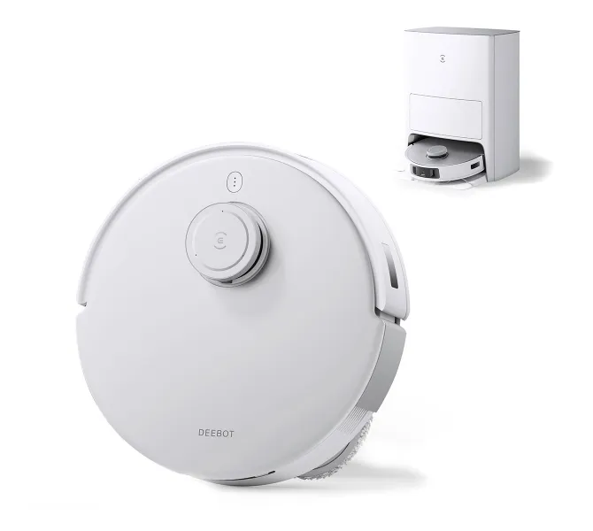

Vacuum Robots
Ecovacs Deebot t20
Key Features:
- Cordless cleaning
- Intelligent navigation
- Self Emptying
- Self Charging
- Self Washing
Price: $1,799 AUD
Options:
- Extended Warranty 4 years
- Enhanced Sensors Package
| Specification | Details |
|---|---|
| Size | 48.6L x 64.2W x 53H cm (Omni Station) |
| Color | White |
The Ecovacs Deebot t20 Robot Vacuum Cleaner features automatic self emptying, charging, cleaning and washing. Inteligent voice control with in app controls. 6000Pa of suction to pick up large particles to small dust. Up to 260 minutes of runtime on a single charge. Hot water mop washing. 3D real time scanning and obstical avoidance. Inteligent auto lift mop pads for when on rugs or carpet.